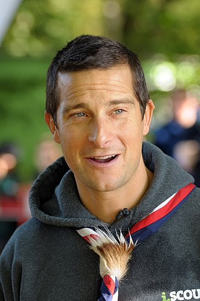

Bear Grylls

Bear grylls OBE is a British adventurer,writer, television presenter, motivational speaker
and entrepeneur. He is a former SAS(Special Air Service) serviceman, survival instructor
and honorary lieutenant-colonel. He is also the 'Cheif Scout of the United Kingdom
and Overseas Territories'.
He is best known for his television series "Man vs Wild".
Biography
- He made his first television appearance in an advertisement for Sure Deodorant,
which features his conquest in Mount Everest
- He works as a motivational speaker, giving speeches at corporations, churches
, schools and other organisations
- He released his first book "Facing Up(UK)/ The Kid who climbed Everest(US)"
which describes his ovyage and acheivements climbing to the summit of Mount Everest
- Some of his books include "Ghost Flight", "Burning Angels", "Mission Survival".
- He likes doing yoga and follows his yoga routine everywhere including Airports,
Deserts and Middle of the Jungle.